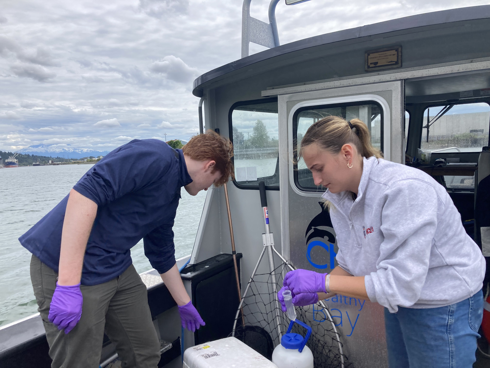
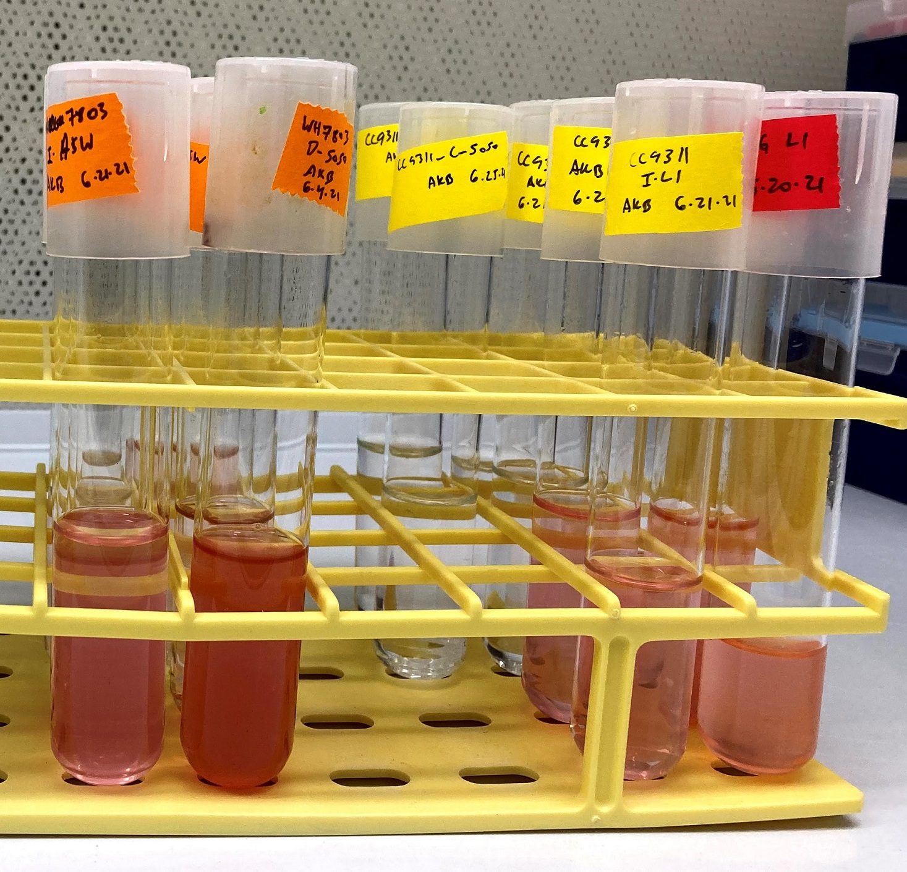

Research

My research focuses on understanding the important roles that microbes play in controlling the ocean biogeochemical cycles. I am broadly interested in how microorganisms adapt to their dynamic environments and how their activities cumulatively control the biological pump.
I am still getting my lab at PLU up and running.  In summer 2023 & 2024, my lab group focused on adapting published methods for intracellular and extracellular metabolite analysis to our lab sapce and instrumentation. We also grew a lot of phytoplankton cultures, doing experiments testing the physiological growth response of marine aglgea to changes in salinity and nutrient concentrations. Lastly, we went on a few field trips to collect samples from Puget Sound, including a tour of Comencement Bay with Communities for a Healthy Bay. We hope to continue studying our local waters in the South Puget Sound and collaborating with local groups like CHB

In addition to starting research at PLU, I am contiuing to work on projects related to my postdoctoral research and graduate research described below.
As a postdoctoral researcher in the Waldbauer lab I investigated how the uptake and use of different nitrogen sources changes phytoplankton metabolism. To do this I grew model marine microbes in the lab and conduct experiments with different nitrogen sources, measuring growth and protein expression.

In my graduate work I studied natural marine microbial communities with the analytical tools of metabolomics: measurements of small organic molecules that microbes use and produce. I think of these molecules as the currency of microbes - they can't talk to us or to one another, but we can trace their activity and interactions through the chemical exchanges they make and the signatures they leave behind. My dissertation research focused on studying surface microbial communities in the Pacific Ocean.
Microbial life in the surface ocean
Picocyanobacterial nitrogen use
 Nitrogen is a limiting nutrient in vast regions of the ocean, but oceanographers usually only consider the ability of phytoplankton to grow using inorganic nitrogen (nitrate, nitrite, and ammonia). There is much more organic nitrogen than inorganic nitrogen dissolved in seawater, but the organic forms are not always in available to phytoplankton. Some phytoplankton have been shown to take up small dissolved organic nitrogen compounds, but the metabolic consequences of this uptake have not been systematically explored in a way that lets us understand the ecological implications.
I am particularly interested in the tiny cyanobacteria Synechococcus and Prochlorococcus, which are globally important primary producers whose different clades can use a variety of inorganic and organic nitrogen sources. Understanding when and how these organims use different nitrogen, and what the metabolic consequences are will enable us to better predict why these organisms thrive where they do (their biogeography) and refine our understanding of their ecosystem roles.
Diel cycles
The major source of energy into the ocean is through light, which phytoplankton use to photosynthesize and provide organic carbon for the rest of the microbial community. The daily cycles of light and dark are thus fundamental controls on how the microbial community in the surface ocean operates.
 As part of the SCOPE collaboration I was able to participate in a research
cruise in 2015 that sampled the surface ocean north of Hawaii near Station ALOHA
for many days in a row to study the daily lives of plankton in the surface oligotrophic ocean.
I collected samples for particulate metabolites and have been able to identify oscillations in metabolites
due to the behavior of the microbial community as a whole and to the individual needs of particular plankton groups.
As part of the SCOPE collaboration I was able to participate in a research
cruise in 2015 that sampled the surface ocean north of Hawaii near Station ALOHA
for many days in a row to study the daily lives of plankton in the surface oligotrophic ocean.
I collected samples for particulate metabolites and have been able to identify oscillations in metabolites
due to the behavior of the microbial community as a whole and to the individual needs of particular plankton groups.
This work informs how we think about the fluxes of energy as small, labile organic carbon compounds that are used and produced on daily time scales.
Nutrient limitation
 I am interested in how
microorganisms change their metabolism and adapt to nutrient limitation over short (hours) and long (evolutionary) time scales.
I've studied nutrient limitation in natural communities by studying the metabolites used and made by surface microbial communities
across the transition from the subtropical north Pacific, which is nitrogen limited,
to the subarctic north Pacific, which is typically iron limited.
This work is part of the
Simons foundation SCOPE-Gradients project.
As part of this work I've conducted nutrient amendment incubation experiments to test the nutrient limitation of the
phytoplankton growth and the overall plasticity of the community.
I am interested in how
microorganisms change their metabolism and adapt to nutrient limitation over short (hours) and long (evolutionary) time scales.
I've studied nutrient limitation in natural communities by studying the metabolites used and made by surface microbial communities
across the transition from the subtropical north Pacific, which is nitrogen limited,
to the subarctic north Pacific, which is typically iron limited.
This work is part of the
Simons foundation SCOPE-Gradients project.
As part of this work I've conducted nutrient amendment incubation experiments to test the nutrient limitation of the
phytoplankton growth and the overall plasticity of the community.
In addition to artificial nutrient amendment experiments I was able to participate in a rapid response cruise in 2018 to sample seawater impacted by the eruption of Kīlauea on the island of Hawai'i. This was a 'natural' nutrient amendment that added metals and phosphorus to the typically oligotrophic ocean.
Method development
I am always interested in using chromatography and mass spectrometry tools to understand natural microbial communities and their biogeochemical impacts. As such I'm continually seeking to develop, improve, adapt, and implement analytical chemistry and statistical methods.
My Master's work focused on developing methods to do metabolomics analyses of marine samples. This involved liquid chromatography and mass spectrometry method adaptations and software development.
As a postdoctoral researcher I worked on optimizing the data analysis methods for stable isotope enriched proteomics samples.